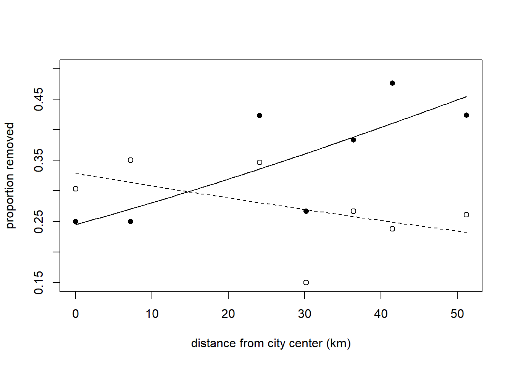
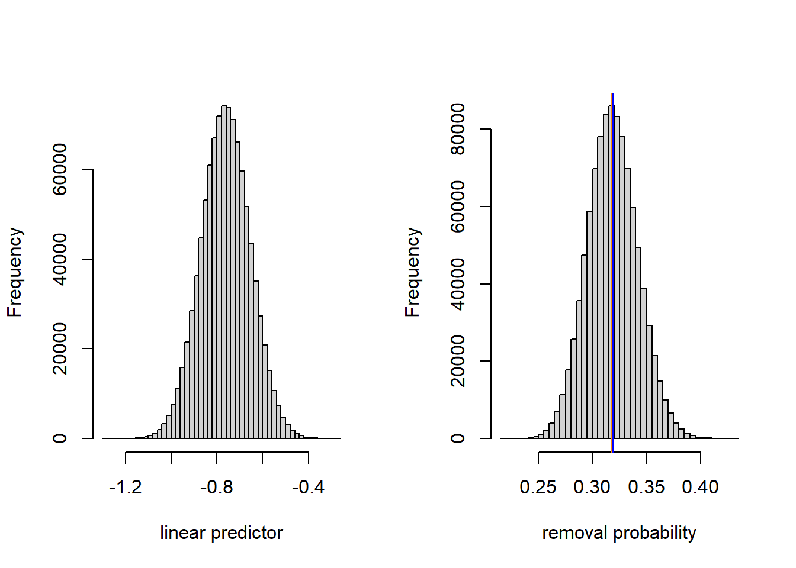
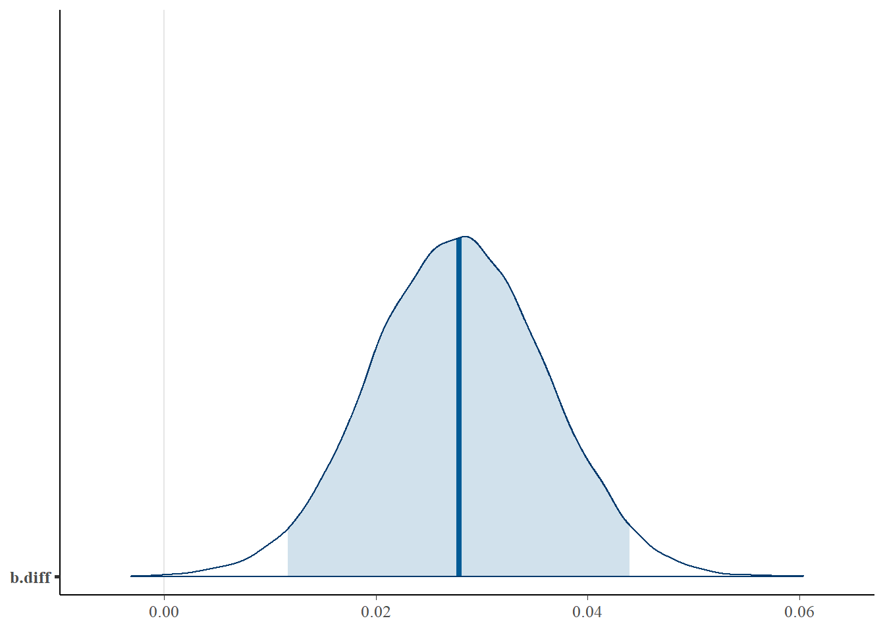
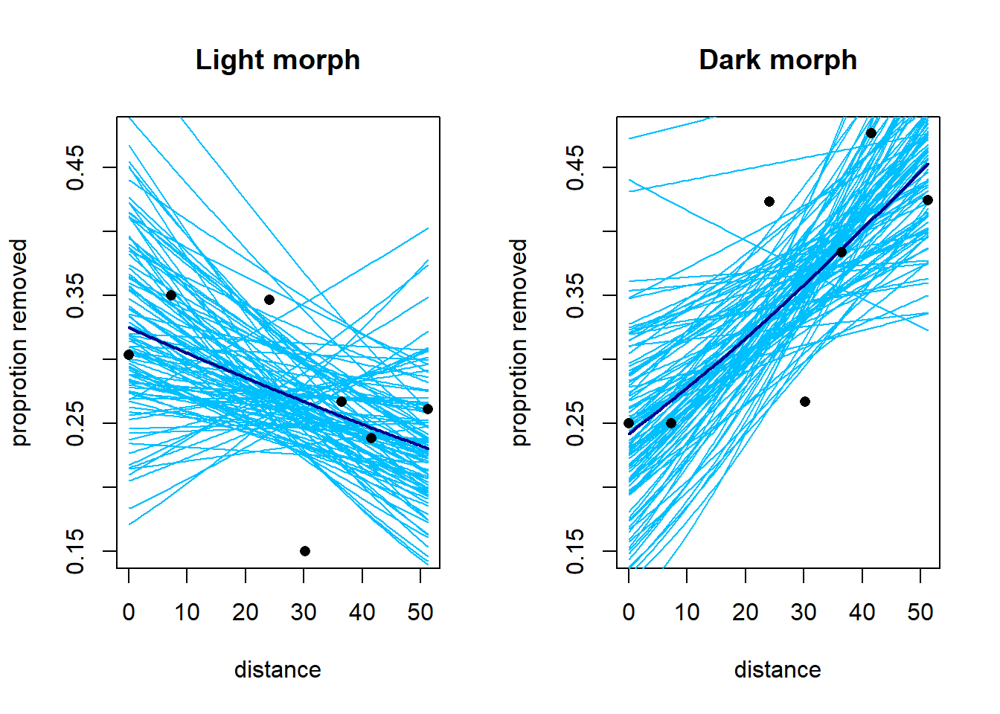
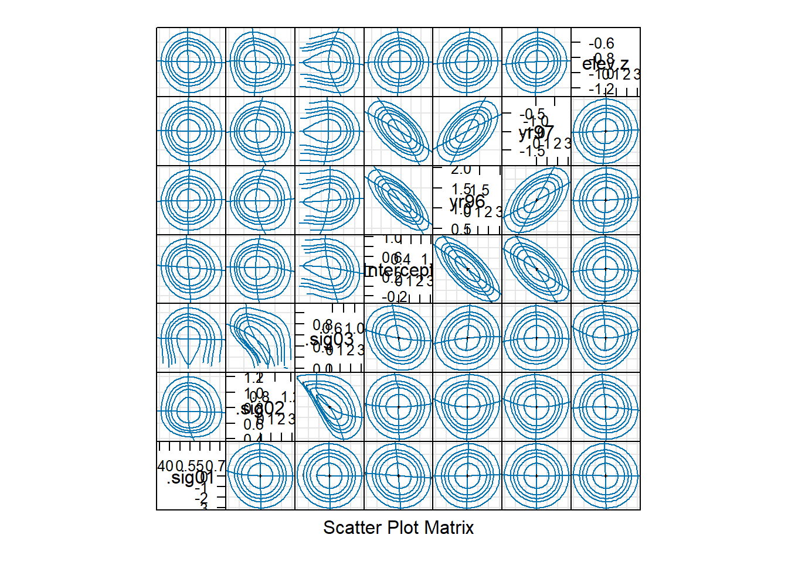
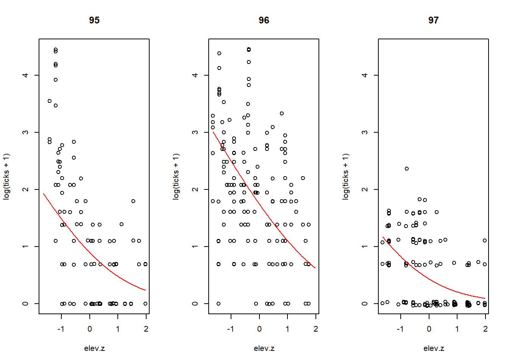
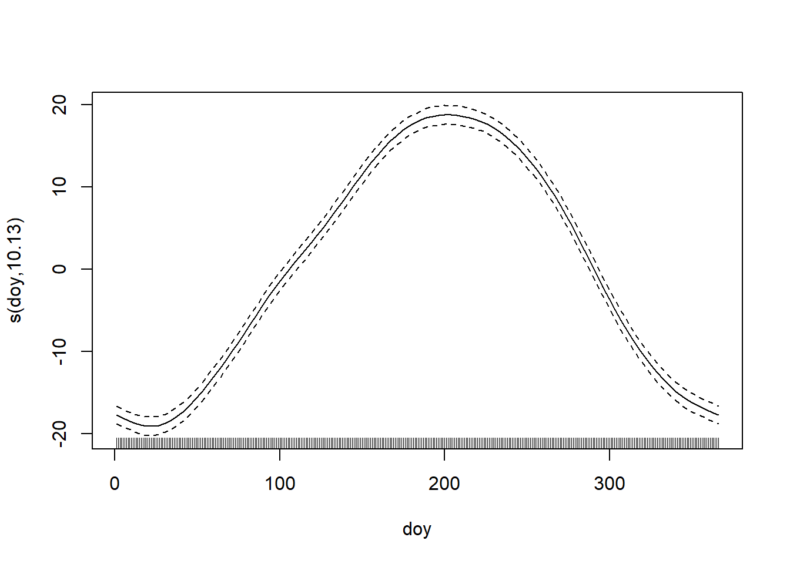
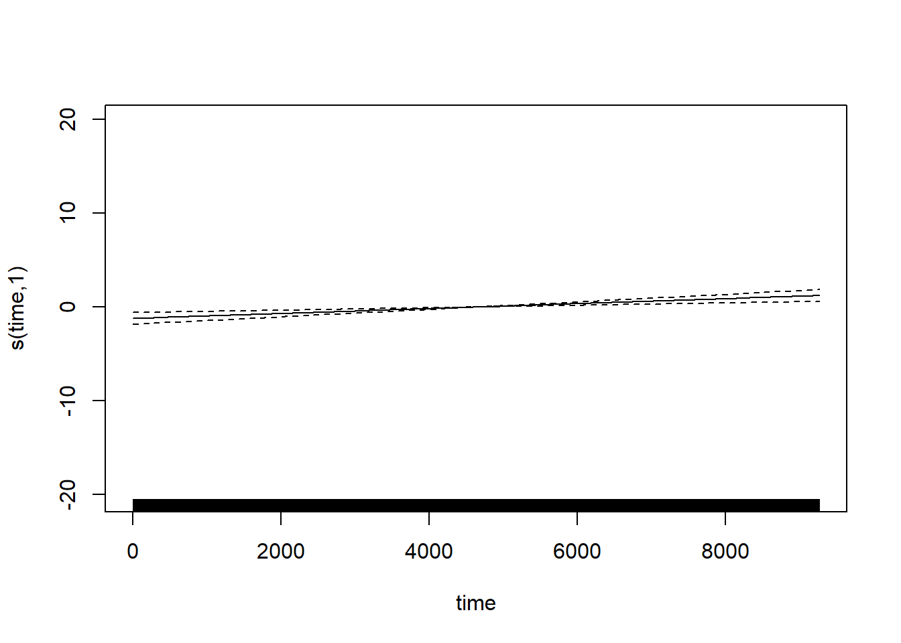
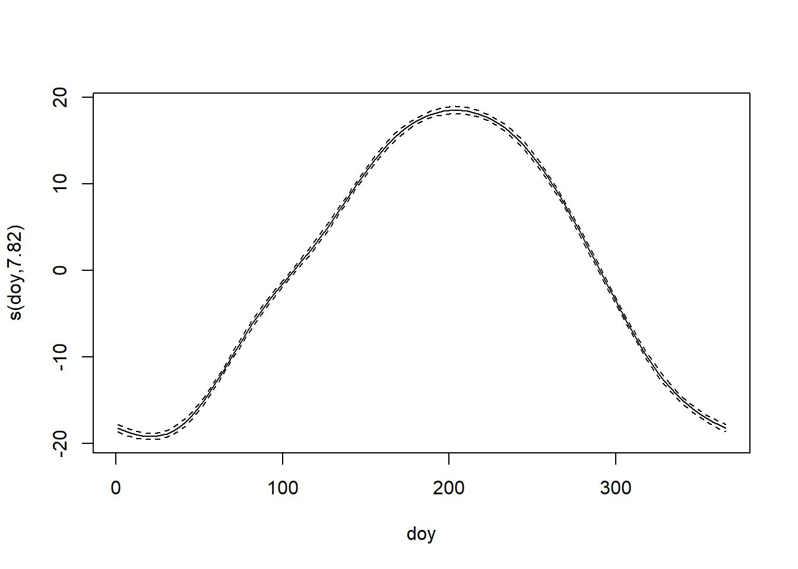
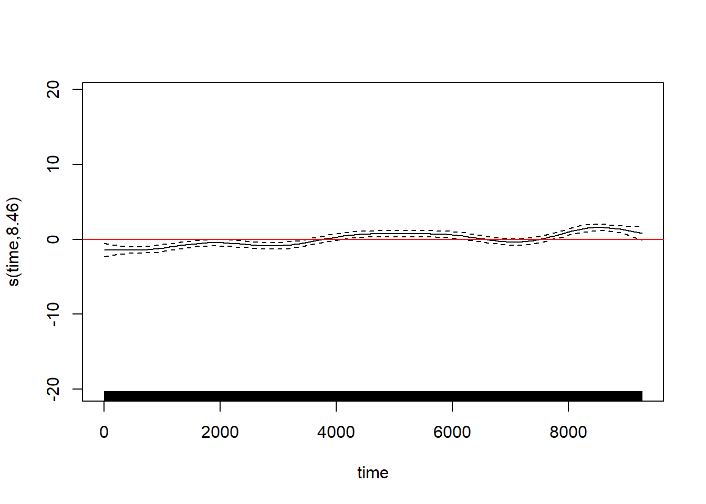

Chapter 8 Generalized linear mixed models
8.1 Example 1: Industrial melanism data, continued
We first encountered the industrial melanism data when we studied mixed models. There, we fit models that accounted for the correlation among observations from the same location, but we didn’t fully accommodate the non-normal nature of the responses. If we can accommodate the fact that the responses are binomially distributed, then we can account for the fact that differing numbers of moths were placed at the different stations—a fact that our previous approach ignores. To account for the correlated, binomial nature of the responses, we shall fit the model \[\begin{align*} y_{ij} & \sim \mathrm{Binom}(p_{ij}, n_{ij})\\ \mathrm{logit}(p_{ij}) & = \eta_{ij} \\ \eta_{ij} & = a_i + b_i x_j + L_j \\ L_j & \sim \mathcal{N}(0, \sigma^2_L) \end{align*}\] continuing to use the notation scheme that we developed previously.
8.1.1 GEEs
First we try a GEE with a compound symmetry (“exchangable”) correlation structure imposed on the pair of measurements at each station. Because there are only two data records for each station, there is no loss of generality in assuming this correlation structure. We fit the model using geepack::geeglm.
## Loading required package: geepackmoth <- read.table("data/moth.txt", head = TRUE, stringsAsFactors = TRUE)
contrasts(moth$morph) <- contr.treatment(n = 2, base = 2)
fm2 <- geeglm(cbind(removed, placed - removed) ~ distance * morph,
family = binomial(link = "logit"),
data = moth,
id = location,
corstr = "exchangeable")
summary(fm2)##
## Call:
## geeglm(formula = cbind(removed, placed - removed) ~ distance *
## morph, family = binomial(link = "logit"), data = moth, id = location,
## corstr = "exchangeable")
##
## Coefficients:
## Estimate Std.err Wald Pr(>|W|)
## (Intercept) -0.714717 0.129102 30.648 3.09e-08 ***
## distance -0.009385 0.003221 8.489 0.00357 **
## morph1 -0.410238 0.163953 6.261 0.01234 *
## distance:morph1 0.027762 0.005812 22.815 1.78e-06 ***
## ---
## Signif. codes: 0 '***' 0.001 '**' 0.01 '*' 0.05 '.' 0.1 ' ' 1
##
## Correlation structure = exchangeable
## Estimated Scale Parameters:
##
## Estimate Std.err
## (Intercept) 0.01313 0.006935
## Link = identity
##
## Estimated Correlation Parameters:
## Estimate Std.err
## alpha 0.3911 0.298
## Number of clusters: 7 Maximum cluster size: 2The estimate of the difference between slopes on the log-odds scale is 0.0278, with an approximate 95% confidence interval of (0.0164, 0.0391). This corresponds to an odds ratio of 1.028, with an approximate 95% confidence interval of (1.017, 1.040). To visualize the model, we might plot the fitted proportion removed vs. distance for both color morphs. Bear in mind that fitted values here correspond to marginal mean removal rates.
inv.logit <- function(x) exp(x) / (1 + exp(x))
light.fit <- function(d) inv.logit(-0.71472 - 0.00938 * d)
dark.fit <- function(d) inv.logit(-0.71472 - 0.41024 + (-0.00938 + 0.02776) * d)
curve(dark.fit, from = min(moth$distance), to = max(moth$distance),
xlab = "distance from city center (km)",
ylab = "proportion removed",
ylim = c(0.15, 0.5))
curve(light.fit, from = min(moth$distance), to = max(moth$distance),
xlab = "distance from city center (km)",
ylab = "proportion removed",
add = TRUE,
lty = "dashed")
with(subset(moth, morph == "dark"), points(removed / placed ~ distance, pch = 16))
with(subset(moth, morph == "light"), points(removed / placed ~ distance, pch = 1))
For the sake of comparing marginal means to conditional means, we will consider the predicted removal rate of dark morphs at a hypothetical location 20 km from the city center. This predicted removal rate is 0.319.
## [1] 0.31921978.1.2 GLMMs
Next, we will fit the same model with lme4::glmer.
## Loading required package: lme4## Loading required package: Matrixfm3 <- glmer(cbind(removed, placed - removed) ~ distance * morph + (1 | location),
family = binomial(link = "logit"),
data = moth)
summary(fm3)## Generalized linear mixed model fit by maximum likelihood (Laplace
## Approximation) [glmerMod]
## Family: binomial ( logit )
## Formula: cbind(removed, placed - removed) ~ distance * morph + (1 | location)
## Data: moth
##
## AIC BIC logLik -2*log(L) df.resid
## 85.7 88.9 -37.8 75.7 9
##
## Scaled residuals:
## Min 1Q Median 3Q Max
## -1.73965 -0.41890 0.02967 0.66584 1.08052
##
## Random effects:
## Groups Name Variance Std.Dev.
## location (Intercept) 0.01148 0.1072
## Number of obs: 14, groups: location, 7
##
## Fixed effects:
## Estimate Std. Error z value Pr(>|z|)
## (Intercept) -0.719786 0.205488 -3.503 0.000460 ***
## distance -0.009341 0.006270 -1.490 0.136243
## morph1 -0.411128 0.274765 -1.496 0.134578
## distance:morph1 0.027819 0.008094 3.437 0.000588 ***
## ---
## Signif. codes: 0 '***' 0.001 '**' 0.01 '*' 0.05 '.' 0.1 ' ' 1
##
## Correlation of Fixed Effects:
## (Intr) distnc morph1
## distance -0.843
## morph1 -0.641 0.538
## dstnc:mrph1 0.558 -0.660 -0.859## Computing profile confidence intervals ...## 2.5 % 97.5 %
## distance:morph1 0.01201418 0.04377205Nothing here is radically different. The parameter estimates are so similar to those from the GEE that a plot of the GEE and GLMM fits would be indistinguishable to the eye.
Although summary.glmer doesn’t report the deviance, functions exist to obtain this information. We can use the deviance to assess overdispersion in the same way that we would in a GLM.
## [1] 9.250077## [1] 9The ratio of the deviance to the residual df is approximately 1, suggesting that the data are not overdispersed. Note that including the location random effect in the GLMM has eliminated the mild overdispersion that we detected in the GLM without the location random effect.
To get a sense of how the conditional means compare to the marginal means, we will compute the conditional mean removal rate of dark morphs at a distance 20 km from the city center.
dark.linpred.glmm <- function(d) -0.71979 - 0.41113 + (-0.00934 + 0.02782) * d
dark.fit.glmm <- function(d) inv.logit(dark.linpred.glmm(d))
dark.fit.glmm(20)## [1] 0.3183597The conditional mean of the predicted removal rate is 0.318.
Here, the difference between the marginal and conditional means is tiny. Nevertheless, we can gain a deeper understanding of the difference by taking a look at the fitted population of possible locations at 20 km distance on both the linear predictor scale and the data scale.
linpred.sample <- rnorm(1e6, mean = dark.linpred.glmm(20), sd = 0.1072)
prob.sample <- inv.logit(linpred.sample)
(conditional.mean <- inv.logit(dark.linpred.glmm(20)))## [1] 0.3183597## [1] 0.3188329par(mfrow = c(1, 2))
hist(linpred.sample, breaks = 50, xlab = "linear predictor", main = "")
hist(prob.sample, breaks = 50, xlab = "removal probability", main = "")
abline(v = conditional.mean, col = "darkorange", lwd =2)
abline(v = marginal.mean, col = "blue", lwd = 2)
We see that the variance of the location-level random effect is small enough that the inverse logit transformation is effectively linear. Thus, the distribution of removal probabilities across locations is nearly normal, and the conditional and marginal means nearly coincide. The estimate of the marginal mean that we have generated by simulation is not quite the same as the marginal mean generated by the GEE, which could either be due to the stochastic sampling that we have used above, and/or small numerical differences in the estimation.
For the sake of illustration, we repeat these calculations by supposing that the location-to-location standard deviation was 10 times larger.
linpred.sample <- rnorm(1e6, mean = dark.linpred.glmm(20), sd = 10 * 0.1072)
prob.sample <- inv.logit(linpred.sample)
(conditional.mean <- inv.logit(dark.linpred.glmm(20)))## [1] 0.3183597## [1] 0.3499621par(mfrow = c(1, 2))
hist(linpred.sample, breaks = 50, xlab = "linear predictor", main = "")
hist(prob.sample, breaks = 50, xlab = "removal probability", main = "")
abline(v = conditional.mean, col = "darkorange", lwd =2)
abline(v = marginal.mean, col = "blue", lwd = 2)
8.1.3 Bayesian fit
We now fit the model using JAGS and vague priors.
moth.model <- function() {
for (j in 1:J) { # J = number of data points
y[j] ~ dbin(p[j], n[j]) # data distribution
p[j] <- ilogit(eta[j]) # inverse link
eta[j] <- a[morph[j]] + b[morph[j]] * dist[j] + L[loc[j]] # linear predictor,
}
for (j in 1:7){ # random effects for location
L[j] ~ dnorm(0, tau_L)
}
a[1] ~ dnorm (0.0, 1E-6) # priors for intercept
a[2] ~ dnorm (0.0, 1E-6) # priors for intercept
b[1] ~ dnorm (0.0, 1E-6) # prior for slope
b[2] ~ dnorm (0.0, 1E-6) # prior for slope
tau_L ~ dgamma(.01, .01) # prior for location-level random effect
sd_L <- pow(tau_L, -1/2)
b.diff <- b[1] - b[2]
}
jags.data <- list(y = moth$removed,
n = moth$placed,
dist = moth$distance,
loc = as.numeric(moth$location),
morph = as.numeric(moth$morph),
J = nrow(moth))
jags.params <- c("a[1]", "a[2]", "b[1]", "b[2]", "b.diff", "sd_L")
jags.inits <- function(){
list("tau_L" = runif(1))
}
set.seed(1)
jagsfit <- jags(data = jags.data,
inits = jags.inits,
parameters.to.save = jags.params,
model.file = moth.model,
n.chains = 3,
n.iter = 5E4,
n.thin = 5)## module glm loadedFor some reason this works without specifying initial values for \(a\) and \(b\) (now both vectors). Maybe the initial values are drawn from the prior?
mcmc.output <- as.data.frame(jagsfit$BUGSoutput$sims.list)
(post.mean <- apply(mcmc.output, 2, mean))## a.1 a.2 b.diff b.1 b.2 deviance
## -1.141163349 -0.732065931 0.027819509 0.018564400 -0.009255109 75.282988014
## sd_L
## 0.248625835## lower upper
## b.diff 0.01250506 0.04463559
## attr(,"Probability")
## [1] 0.95The posterior mean of the difference in the log-odds slopes — 0.0278 — is essentially the same value that we have seen in every analysis. We can have a look at the full posterior distribution for this difference, and calculate the posterior probability that the difference is \(>0\).

##
## FALSE TRUE
## 5 14995Thus we would say that there is a 0.9997 posterior probability that the proportion of dark moths removed increases more rapidly with increasing distance from Liverpool than the proportion of light moths removed.
We can plot the fit of the model using draws from the posterior distribution of the parameters. The heavy lines below show the fits using the posterior means of the parameters. Do these fits correspond to the marginal or conditional means? (There’s little difference here, but it’s a useful thought exercise.)
subset.samples <- sample(nrow(mcmc.output), size = 100)
moth$prop.removed <- with(moth, removed / placed)
light <- subset(moth, morph == "light")
dark <- subset(moth, morph == "dark")
par(mfrow = c(1, 2))
#------ light morph
plot(prop.removed ~ distance,
data = moth,
type = "n",
main = "Light morph",
ylab = "proprotion removed")
points(x = light$distance, y = light$prop.removed, pch = 16)
for(i in subset.samples) {
a <- mcmc.output$a.2[i]
b <- mcmc.output$b.2[i]
fitted.curve <- function(x) inv.logit(a + b * x)
curve(fitted.curve,
from = min(moth$distance),
to = max(moth$distance),
add = TRUE,
col = "deepskyblue")
}
fitted.mean.curve <- function(x) inv.logit(post.mean['a.2'] + post.mean['b.2'] * x)
curve(fitted.mean.curve,
from = min(moth$distance),
to = max(moth$distance),
add = TRUE,
col = "darkblue",
lwd = 2)
points(x = light$distance, y = light$prop.removed, pch = 16)
#--------- dark morph
plot(prop.removed ~ distance,
data = moth,
type = "n",
main = "Dark morph",
ylab = "proprotion removed")
for(i in subset.samples) {
a <- mcmc.output$a.1[i]
b <- mcmc.output$b.1[i]
fitted.curve <- function(x) inv.logit(a + b * x)
curve(fitted.curve,
from = min(moth$distance),
to = max(moth$distance),
add = TRUE,
col = "deepskyblue")
}
fitted.mean.curve <- function(x) inv.logit(post.mean['a.1'] + post.mean['b.1'] * x)
curve(fitted.mean.curve,
from = min(moth$distance),
to = max(moth$distance),
add = TRUE,
col = "darkblue",
lwd = 2)
points(x = dark$distance, y = dark$prop.removed, pch = 16)
8.2 Example 2: Ticks on red grouse
This example comes from Ben Bolker’s chapter in Fox, Negrete-Yankelevich, and Sosa (2015). Bolker describes the data as follows:
“Elston et al. (2001) used data on numbers of ticks sampled from the heads of red grouse chicks in Scotland to explore patterns of aggregation. Ticks have potentially large fitness and demographic consequences on red grouse individuals and populations, but Elston et al.’s goal was just to decompose patterns of variation into different scales (within-brood, within-site, by altitude and year). The response is the tick count (TICKS, again Poisson or negative binomial); altitude (HEIGHT, treated as continuous) and year (YEAR, treated as categorical) are fixed predictor variables. Individual within brood (INDEX) and brood within location are nested random-effect grouping variables, with the baseline expected number of ticks (intercept) varying among groups.”
An alternative analysis of these data can be found on Bolker’s Github page at https://bbolker.github.io/mixedmodels-misc/ecostats_chap.html.
The data include 3 years and 63 locations. Location and year are crossed (some locations are sampled in multiple years), but not every location is sampled every year. There are 118 broods, and each brood is nested within a year-location pair. Each observation corresponds to one of 403 individuals. Individuals are nested within broods. We also know each location’s elevation.
To develop notation, let \(i=1, \ldots, 3\) index the years, let \(j = 1, \ldots, 63\) index the locations, let \(k = 1, \ldots, n_{ij}\) index the broods sampled in each year-location pair, and let \(l = 1, \ldots, n_{ijk}\) index the separate individuals in each brood. Note that almost all year-location pairs will be represented by at most 1 brood (\(n_{ij}=0\) or \(=1\) for almost all combination of years and locations) but there is at least one year-location pair with multiple broods (\(n_{ij} > 1\)). Let \(y_{ijkl}\) (the response) be the number of ticks found on individual \(l\) of brood \(k\) at location \(j\) in year \(i\), and let \(x_j\) be the elevation of location \(j\). We are interested in characterizing how tick load varies among locations, among broods within locations, and among individuals within broods. We are also interested in characterizing the relationship between elevation and tick load. It seems unlikely that 3 years are enough to estimate year-to-year variation, so we will use fixed-effect parameters to capture the differences among years. We will begin by assuming that the tick load takes a Poisson distribution, and use the canonical log link. We include an observation-level random effect so that we have a variance parameter that captures individual-to-individual variation among individuals in the same brood.
In notation, our GLMM is \[\begin{align*} y_{ijkl} & \sim \mathrm{Pois}(\mu_{ijkl})\\ \log(\mu_{ijkl}) & = \eta_{ijkl} \\ \eta_{ijkl} & = a_i + b x_j + L_j + B_{ijk} + \varepsilon_{ijkl} \\ L_j & \sim \mathcal{N}(0, \sigma^2_L) \\ B_{ijk} & \sim \mathcal{N}(0, \sigma^2_B) \\ \varepsilon_{ijkl} & \sim \mathcal{N}(0, \sigma^2_\varepsilon) \\ \end{align*}\]
## Loading required package: latticetick <- read.table("data/tick.txt", head = T)
names(tick) <- c("index", "ticks", "brood", "elevation", "yr", "loc")
tick$index <- as.factor(tick$index)
tick$brood <- as.factor(tick$brood)
tick$yr <- as.factor(tick$yr)
tick$loc <- as.factor(tick$loc)
# center and scale elevation
tick$elev.z <- with(tick, (elevation - mean(elevation)) / sd(elevation))Model fitting:
fm1 <- glmer(ticks ~ yr + elev.z + (1 | loc) + (1 | brood) + (1 | index),
family = "poisson",
data = tick)
summary(fm1)## Generalized linear mixed model fit by maximum likelihood (Laplace
## Approximation) [glmerMod]
## Family: poisson ( log )
## Formula: ticks ~ yr + elev.z + (1 | loc) + (1 | brood) + (1 | index)
## Data: tick
##
## AIC BIC logLik -2*log(L) df.resid
## 1794.5 1822.5 -890.3 1780.5 396
##
## Scaled residuals:
## Min 1Q Median 3Q Max
## -1.6123 -0.5536 -0.1486 0.2849 2.4430
##
## Random effects:
## Groups Name Variance Std.Dev.
## index (Intercept) 0.2932 0.5415
## brood (Intercept) 0.5625 0.7500
## loc (Intercept) 0.2796 0.5287
## Number of obs: 403, groups: index, 403; brood, 118; loc, 63
##
## Fixed effects:
## Estimate Std. Error z value Pr(>|z|)
## (Intercept) 0.3728 0.1964 1.899 0.057622 .
## yr96 1.1804 0.2381 4.957 7.15e-07 ***
## yr97 -0.9786 0.2628 -3.724 0.000196 ***
## elev.z -0.8543 0.1236 -6.910 4.83e-12 ***
## ---
## Signif. codes: 0 '***' 0.001 '**' 0.01 '*' 0.05 '.' 0.1 ' ' 1
##
## Correlation of Fixed Effects:
## (Intr) yr96 yr97
## yr96 -0.728
## yr97 -0.610 0.514
## elev.z 0.011 0.048 0.047We can have a look at the profile confidence intervals and profile confidence regions for each of the model parameters.
## 2.5 % 97.5 %
## .sig01 0.45148391 0.6451854
## .sig02 0.52127951 1.0569758
## .sig03 0.00000000 0.8928761
## (Intercept) -0.02822276 0.7485772
## yr96 0.71308987 1.6583683
## yr97 -1.50239845 -0.4606279
## elev.z -1.10589089 -0.6090507

We see that the standard deviation of the location-level random effect (“.sig03”) has a 95% confidence interval that includes 0. We might conclude that the location-level random effect is unnecessary. In other words, there is no evidence that different broods from the same location are more strongly (positively) correlated than two broods at different locations at the same elevation. The bivariate confidence regions show us that the estimated SD of the location-level random effect is negatively correlated with the estimated SD of the brood-level random effect (“.sig02”). Thus, the location-to-location variability (above and beyond the elevation effect) from brood-to-brood variability are confounded, which makes sense, given that most locations are represented by a small number of broods.
It is something of a judgment call as to whether it would make sense at this point to drop the location-level random effect. We could retain it on the grounds that one expects some location-to-location variation beyond the effect of elevation, even if that variation is small.
To test for the significance of a random effect, the usual approach is to conduct a likelihood-ratio test to compare models with and without the random effect. In this case, the null hypothesis is that the variance of the tested random effect is 0, which is on the boundary of the allowable values for a variance. Thus, the \(p\)-value from a LRT is conservative (too big). In simple models, the \(p\)-value for the LRT is twice as big as it should be, suggesting that the appropriate correction is to divide the \(p\)-value by 2 (Pinheiro and Bates (2000)). For more complex models, however, the divide-by-2 rule is only a rough rule of thumb. We illustrate by comparing a model with the location-level random effect to one without it. (In notation, we are testing \(\sigma^2_L = 0\).)
fm2 <- glmer(ticks ~ yr + elev.z + (1 | brood) + (1 | index),
family = "poisson",
data = tick)
anova(fm2, fm1)## Data: tick
## Models:
## fm2: ticks ~ yr + elev.z + (1 | brood) + (1 | index)
## fm1: ticks ~ yr + elev.z + (1 | loc) + (1 | brood) + (1 | index)
## npar AIC BIC logLik -2*log(L) Chisq Df Pr(>Chisq)
## fm2 6 1794.0 1818.0 -891.02 1782.0
## fm1 7 1794.5 1822.5 -890.27 1780.5 1.4973 1 0.2211If we use the rough divide-by-2 rule, the approximate \(p\)-value is \(p \approx 0.11\). Thus, the model with the location-level random effect does not improve significantly on the model without the location-level random effect. We might conclude that the location-level random effect is unnecessary.
Although this analysis focused on how different random effects contributed to the overall variation in tick load, it is also helpful to visualize the fit of the model. The plot below shows the tick load for each individual (plotted on a log + 1 scale) vs. the centered and scaled elevation variable, along with the fitted mean line for each year. Note that the curvature in the fit appears because the response is shown as the log + 1 instead of the log. The fits would be straight lines on the log scale.
par(mfrow = c(1, 3))
plot.subset <- function(year, a, b) {
with(tick, plot(log(ticks + 1) ~ elev.z, type = "n", main = year))
with(subset(tick, yr == year), points(jitter(log(ticks + 1)) ~ elev.z))
fit <- function(x) log(1 + exp(a + b * x))
curve(fit, from = min(tick$elev.z), to = max(tick$elev.z), add = TRUE, col = "red")
}
plot.subset("95", a = 0.3728, b = -0.8543)
plot.subset("96", a = 0.3728 + 1.1804, b = -0.8543)
plot.subset("97", a = 0.3728 - 0.9787, b = -0.8543)
8.3 GAMMs
Generalized additive mixed models (GAMMs) include just about every model feature we’ve discussed: splines to capture smooth effects of predictors, non-Gaussian responses, and correlated errors. There are two software routines available for fitting GAMMs in R: mgcv::gamm and gamm4::gamm4. The routine mgcv::gamm is based on lme, and thus provides access to the non-constant variance and correlation structures that we saw when discussing generalized least squares. The routine gamm4::gamm4 is based on lme4, and thus provides access to the same fitting syntax as lmer and glmer. We will illustrate each in turn.
8.3.1 mgcv::gamm
As we have seen, serial data usually have a serial dependence structure. They are also data for which one might want to use splines to capture the underlying trend. Time series provide a prime example. Below, we will analyze daily average temperature data from RDU from January 1, 1995 to August 27, 2025.14 First, some housekeeping and exploratory analysis.
rdu <- read.table("data/rdu-temperature.txt", head = T)
# remove NA's, coded as -99
with(rdu, table(temp == -99))##
## FALSE TRUE
## 11182 15
We will fit a model that is the sum of two splines: a cyclic spine to capture the within-year trend in temperature, and a smoothing spline to capture the among-year trend in temperature. We also include an AR(1) structure on the errors. The AR(1) structure really should pertain to the entire time series, but the fitting takes too long if we do so. Instead, we just fit the AR(1) structure to the errors within each year, which is only a minimal modification of the model (the only consequence is that we have assumed the errors on Dec 31 and the following Jan 1 are independent), but it allows the model to be fit more quickly.
## Loading required package: mgcv## Loading required package: nlme##
## Attaching package: 'nlme'## The following object is masked from 'package:lme4':
##
## lmList## This is mgcv 1.9-3. For overview type 'help("mgcv-package")'.The output of mgcv::gamm is a list of two parts. The first part, named lme, includes the output of the model that includes most of the model fit except the smooth terms. The second part, named gam, includes any smoothing splines. For the model above, most of the interesting elements are in the gam portion. We’ll look at the lme portion, too, as this contains the estimate of the correlation parameter between consecutive days.
## Linear mixed-effects model fit by maximum likelihood
## Data: strip.offset(mf)
## AIC BIC logLik
## 69855.65 69899.58 -34921.83
##
## Random effects:
## Formula: ~Xr - 1 | g
## Structure: pdIdnot
## Xr1 Xr2 Xr3 Xr4 Xr5 Xr6 Xr7 Xr8
## StdDev: 1.856569 1.856569 1.856569 1.856569 1.856569 1.856569 1.856569 1.856569
##
## Formula: ~Xr.0 - 1 | g.0 %in% g
## Structure: pdIdnot
## Xr.01 Xr.02 Xr.03 Xr.04 Xr.05 Xr.06
## StdDev: 0.008279714 0.008279714 0.008279714 0.008279714 0.008279714 0.008279714
## Xr.07 Xr.08 Residual
## StdDev: 0.008279714 0.008279714 7.523312
##
## Correlation Structure: AR(1)
## Formula: ~1 | g/g.0/yr
## Parameter estimate(s):
## Phi
## 0.6845975
## Fixed effects: y ~ X - 1
## Value Std.Error DF t-value p-value
## X(Intercept) 61.09894 0.1635474 11180 373.5856 0
## Xs(time)Fx1 1.04041 0.1634872 11180 6.3639 0
## Correlation:
## X(Int)
## Xs(time)Fx1 0
##
## Standardized Within-Group Residuals:
## Min Q1 Med Q3 Max
## -4.135868506 -0.651586784 -0.001947138 0.594334324 3.671830628
##
## Number of Observations: 11182
## Number of Groups:
## g g.0 %in% g
## 1 1##
## Family: gaussian
## Link function: identity
##
## Formula:
## temp ~ s(doy, bs = "cc") + s(time)
##
## Parametric coefficients:
## Estimate Std. Error t value Pr(>|t|)
## (Intercept) 61.0989 0.1635 373.6 <2e-16 ***
## ---
## Signif. codes: 0 '***' 0.001 '**' 0.01 '*' 0.05 '.' 0.1 ' ' 1
##
## Approximate significance of smooth terms:
## edf Ref.df F p-value
## s(doy) 7.438 8 839.69 <2e-16 ***
## s(time) 1.000 1 40.51 <2e-16 ***
## ---
## Signif. codes: 0 '***' 0.001 '**' 0.01 '*' 0.05 '.' 0.1 ' ' 1
##
## R-sq.(adj) = 0.762
## Scale est. = 56.6 n = 11182
Intriguingly, but not surprisingly, the fit to the within-year trend clearly shows that the spring warm-up in Raleigh is decidedly more gradual than the fall cool-down. Fall in the Piedmont is ever fleeting.
Less substantially, but still interestingly, the estimate of the correlation between temperature anomalies on consecutive days is \(\approx\) 0.68, which matches experience.
The best-fitting smoothing spline for the among-year trend is linear. Let’s replace the smoothing spline by a linear term so that it is easier to extract the slope, which will now be contained in the lme portion.
fm2 <- gamm(temp ~ s(doy, bs = "cc") + time, data = rdu, correlation = corAR1(form = ~ 1 | yr))
summary(fm2$lme)## Linear mixed-effects model fit by maximum likelihood
## Data: strip.offset(mf)
## AIC BIC logLik
## 69853.65 69890.26 -34921.83
##
## Random effects:
## Formula: ~Xr - 1 | g
## Structure: pdIdnot
## Xr1 Xr2 Xr3 Xr4 Xr5 Xr6 Xr7 Xr8
## StdDev: 1.856608 1.856608 1.856608 1.856608 1.856608 1.856608 1.856608 1.856608
## Residual
## StdDev: 7.523295
##
## Correlation Structure: AR(1)
## Formula: ~1 | g/yr
## Parameter estimate(s):
## Phi
## 0.6845958
## Fixed effects: y ~ X - 1
## Value Std.Error DF t-value p-value
## X(Intercept) 59.29523 0.3272265 11180 181.20547 0
## Xtime 0.00032 0.0000506 11180 6.36501 0
## Correlation:
## X(Int)
## Xtime -0.866
##
## Standardized Within-Group Residuals:
## Min Q1 Med Q3 Max
## -4.135878917 -0.651585309 -0.001948106 0.594336225 3.671840351
##
## Number of Observations: 11182
## Number of Groups: 1The temperature trend is estimated as an increase of 3.22^{-4} \(^\circ\)F per day. That equates to a trend of 0.1176 \(^\circ\)F per year, or 1.176 per decade. Yikes!
To see the effect of the AR(1) correlation structure, let’s compare our model fit to one that doesn’t account for autocorrelated errors.


Without the autocorrelated errors, both smoothing splines are quite a bit wigglier. The confidence intervals around the fit are also too small. Both indicate overfitting. Accounting for the serial correlations in the errors has provided a substantially improved description of the trends in the data.
The temperature increase in the RDU data is hard to believe. As a sanity check, we can plot the average recorded temperature for all (nearly) complete years from 1995–2024. (We say nearly complete because some years have occasional missing values.)
yr_avg <- with(subset(rdu, yr < 2025), aggregate(temp, list(yr), FUN = mean))
names(yr_avg) <- c("year", "avg_temp")
with(yr_avg, plot(avg_temp ~ year))
These data are a little odd because the source of the data changes after 2020 (and the two sources don’t completely agree for temperature data before 2020). The data for 2023–24 are so anomalous that it makes one wonder if something about the measurement device changed. Even prior to 2023, though, the trend in average annual temperature is clear.
8.3.2 gamm::gamm4
Finally, we will use gamm4::gamm4 to fit a new model to the tick data from Elston et al. (2001), this time using a smoothing spline to estimate the effect of elevation on tick abundance. Like mgcv::gamm, gamm4::gamm4 returns models with two compoments: one called mer that contains output from the portion of the model that invokes lme4::(g)lmer, and one called gam that contains the smoothing terms.
require(gamm4)
fm4 <- gamm4(ticks ~ yr + s(elev.z), random = ~ (1 | loc) + (1 | brood) + (1 | index),
family = "poisson",
data = tick)
summary(fm4$mer)## Generalized linear mixed model fit by maximum likelihood (Laplace
## Approximation) [glmerMod]
## Family: poisson ( log )
##
## AIC BIC logLik deviance df.resid
## 1796.5 1828.5 -890.3 1780.5 395
##
## Scaled residuals:
## Min 1Q Median 3Q Max
## -1.6123 -0.5536 -0.1486 0.2849 2.4430
##
## Random effects:
## Groups Name Variance Std.Dev.
## index (Intercept) 2.932e-01 0.5415175
## brood (Intercept) 5.625e-01 0.7499952
## loc (Intercept) 2.796e-01 0.5287786
## Xr s(elev.z) 1.359e-08 0.0001166
## Number of obs: 403, groups: index, 403; brood, 118; loc, 63; Xr, 8
##
## Fixed effects:
## Estimate Std. Error z value Pr(>|z|)
## X(Intercept) 0.3727 0.1964 1.898 0.057694 .
## Xyr96 1.1805 0.2381 4.958 7.14e-07 ***
## Xyr97 -0.9787 0.2628 -3.724 0.000196 ***
## Xs(elev.z)Fx1 -0.8533 0.1235 -6.910 4.84e-12 ***
## ---
## Signif. codes: 0 '***' 0.001 '**' 0.01 '*' 0.05 '.' 0.1 ' ' 1
##
## Correlation of Fixed Effects:
## X(Int) Xyr96 Xyr97
## Xyr96 -0.728
## Xyr97 -0.610 0.514
## Xs(lv.z)Fx1 0.011 0.048 0.047##
## Family: poisson
## Link function: log
##
## Formula:
## ticks ~ yr + s(elev.z)
##
## Parametric coefficients:
## Estimate Std. Error z value Pr(>|z|)
## (Intercept) 0.3727 0.1904 1.958 0.050278 .
## yr96 1.1805 0.2356 5.010 5.44e-07 ***
## yr97 -0.9787 0.2630 -3.722 0.000198 ***
## ---
## Signif. codes: 0 '***' 0.001 '**' 0.01 '*' 0.05 '.' 0.1 ' ' 1
##
## Approximate significance of smooth terms:
## edf Ref.df Chi.sq p-value
## s(elev.z) 1 1 48.03 <2e-16 ***
## ---
## Signif. codes: 0 '***' 0.001 '**' 0.01 '*' 0.05 '.' 0.1 ' ' 1
##
## R-sq.(adj) = 0.156
## glmer.ML = 220.92 Scale est. = 1 n = 403
Our best fitting model continues to contain a linear association between elevation and tick abundance. Again, it is interesting to compare this fit to one without the random effects for brood or location, and to see how the absence of these random effects produces a substantially different (and presumably much over-fit) relationship between elevation and tick abundance.

Bibliography
This analysis is inspired by and modeled after a comparable analysis in section 7.7.2 of Wood (2017). The first portion of these data were downloaded from Kelly Kissock’s website at the University of Dayton, although that website no longer seems to be maintained. The more recent data were downloaded from NOAA’s Climate Data Online (CDO) portal, https://www.ncdc.noaa.gov/cdo-web/search .↩︎